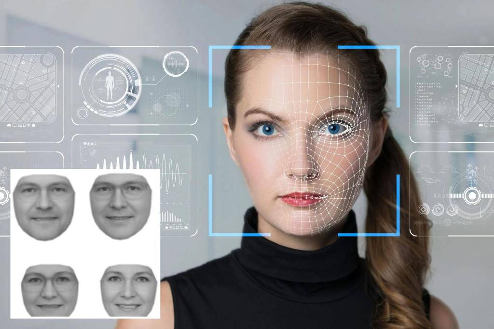

Why AI Finds Conservative Women More Attractive
Image Credits https://nypost.com/2023/06/20/ai-finds-conservative-women-more-attractive-happier-in-photos/
The Story
Sunny is a successful scientist who has recently started to apply artificial intelligence algorithms to study human behavior patterns in social media. She always had an interest in psychology and philosophy, and she felt that AI could help her uncover hidden insights into human behavior. After a few months of training, her algorithm identified an intriguing pattern that conservative women tend to look happier and more attractive in their photos compared to their liberal counterparts.
Sunny was surprised and skeptical at first, but after analyzing hundreds of thousands of images, the results were consistent. The algorithm used facial recognition, emotion detection, and aesthetic criteria to evaluate the images. It measured factors like smile intensity, facial symmetry, skin texture, eye contact, and background aesthetics. The findings opened up a can of worms, as Sunny knew that the topic was sensitive and controversial, and AI can't make moral judgments.
The Examples
To understand why AI finds conservative women more attractive, we need to examine the underlying factors that affect attractiveness in photos. Here are some examples:
- Clothing style - Conservative women tend to dress more modestly and elegantly, which can enhance their perception of social status, intelligence, and cultural refinement. Liberal women, on the other hand, may be more inclined to show their bodies and experiment with unconventional clothes, which can evoke a sense of rebellion, creativity, or sexuality. However, these traits may not necessarily convey attractiveness or happiness in photos. AI algorithms can discern the differences and optimize for visual impact.
- Facial expressions - Studies have shown that the intensity and authenticity of a smile can affect how attractive and trustworthy a person appears in photos. Conservative women may smile more often or more genuinely because they are more likely to adhere to social norms, express positive emotions, and respect their peers. Liberal women, on the other hand, may be more prone to skepticism, irony, or cynicism, which can undermine their perceived attractiveness or cause confusion in AI algorithms.
- Lifestyle choices - Conservative women may be more likely to invest in their health, education, and family values, which can reflect positively on their appearance and well-being. Liberal women, on the other hand, may prioritize their social activism, career goals, or unconventional lifestyles, which can detract from their overall attractiveness or cause inconsistency in AI algorithms.
The Conclusion
So does this mean that conservative women are inherently more attractive than liberal women? No. Attractiveness is a complex and subjective trait that depends on multiple factors, including cultural, historical, and individual preferences. Moreover, AI algorithms are not perfect, as they can suffer from biases, incompleteness, or misinterpretation of data.
However, AI can offer valuable insights into human behavior and preferences that we may not be aware of. By combining AI with careful analysis and scrutiny, we can gain new perspectives on social issues, gender politics, and diversity.
So what are the key takeaways from this AI study?
- AI can detect patterns in human behavior and preferences that may not be apparent to us.
- Attractiveness is a multifaceted trait that depends on many factors, including clothing style, facial expressions, and lifestyle choices.
- AI can help us reflect on our biases and stereotypes and encourage more thoughtful and inclusive conversations.
Curated by Team Akash.Mittal.Blog
Share on Twitter Share on LinkedIn